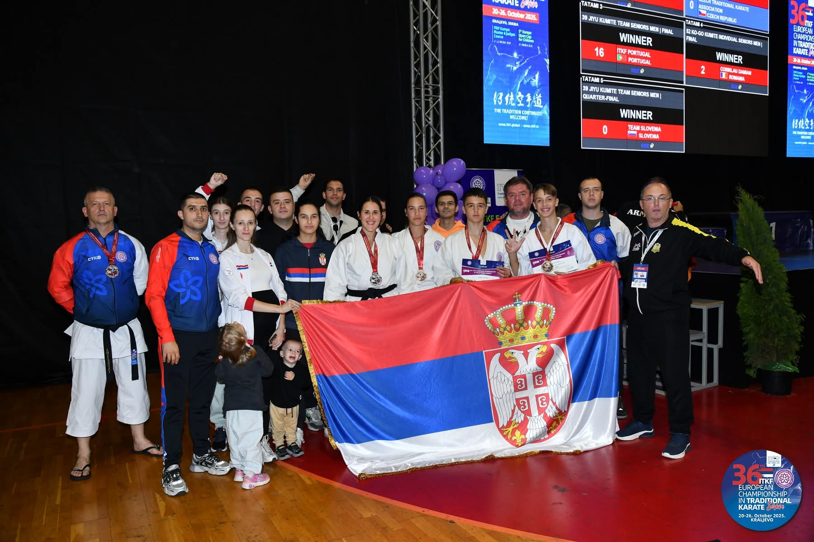
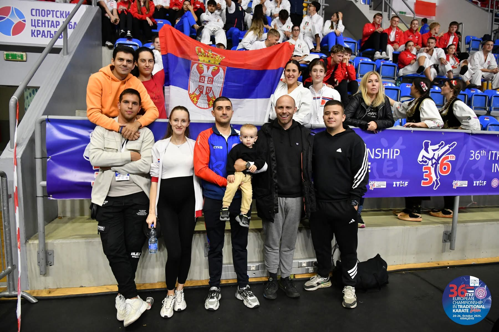
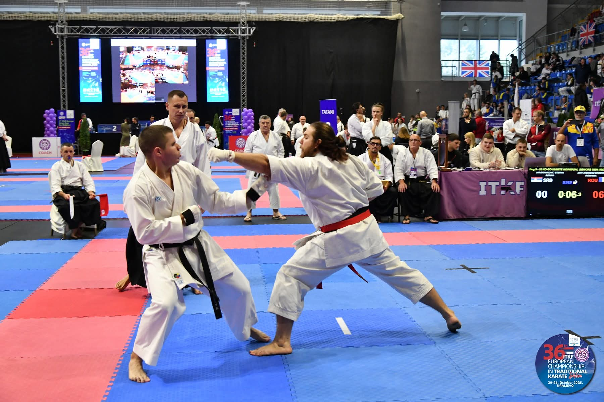
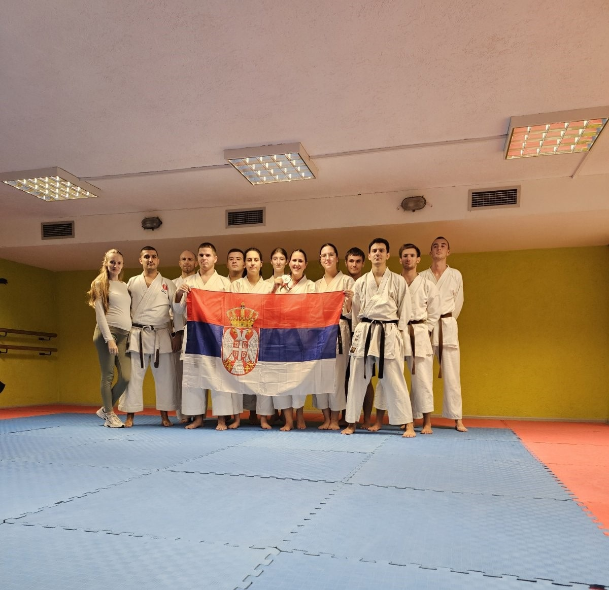
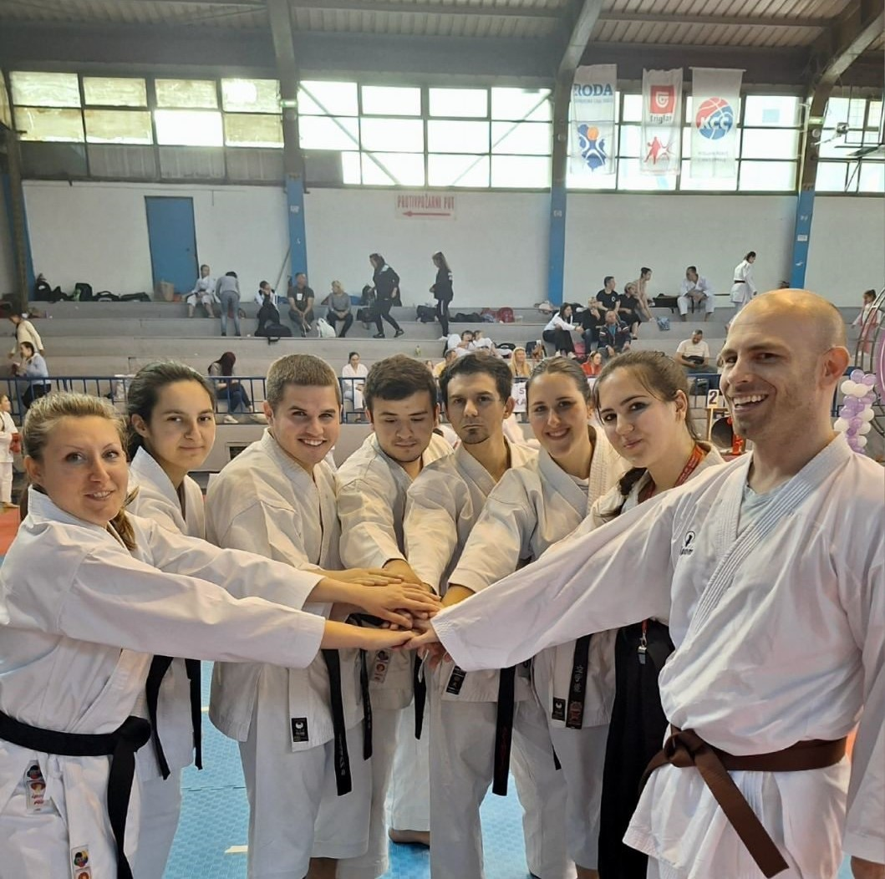

PONOS NA EVROPSKOM PRVENSTVU – KSENIJA KOSTIĆ VICEŠAMPION EVROPE!
Na nedavno održanom Evropskom prvenstvu u tradicionalnom karateu, u organizaciji Srpske tradicionalne karate-do federacije, reprezentacija Srbije ostavila je dobar utisak. Među brojnim učesnicima iz cele Evrope, naša takmičarka Ksenija Kostić, član Karate kluba Japan iz Beograda, zablistala je osvojivši srebrnu medalju i titulu vicešampiona Evrope.
Ovim izuzetnim rezultatom Ksenija je potvrdila kontinuitet kvaliteta koji karate klub Japan, godinama neguje, kao i visok nivo tehničke i mentalne spremnosti karateka koji izrastaju pod okriljem škole tradicionalnog karatea.

Iako je Ksenija donela najvrednije odličje, ostali naši takmičari takođe su zaslužili pohvale. U borbama punim snažnih emocija, Miloš Gašić, Teodora Tomašević, Veljko Pavlović, Vuk Josifović, Stefan Branković, Igor Marić i Živko Aćimović, pokazali su visok nivo karate duha i borbenosti. Mnogima je, kako je ocenio stručni štab, nedostajalo samo malo iskustva i spretnosti u ključnim momentima, ali je očigledno da su ovi mladi borci tek na početku svog uspona.

Posebno interesantne bila je disciplina Enbu, u kojoj su se istakli Sonja i Živko. Imali su izuzetno jaku konkurenciju, ali su prikazali dobar nastup. U kategoriji kata, Sonja Komlen, Snežana Ðurković i Petar Pešić su se našli nadomak prolaska, ali ih je, kako kažu sudije, „sitan debalans u izvođenju“ koštao plasmana među najbolje. Ipak, njihov nastup bio je dostojan pažnje i pokazatelj velikog potencijala.


„Svako izvodjenje borbe i kate, bill je napeto. Ali ponosna sam na svaki osmeh naših takmičara. Oni su pokazali karakter i ljubav prema karateu. Čast je što je selektor reprezentacije trener iz našeg kluba – to je dokaz da kvalitet i posvećenost uvek budu prepoznati. Naš tim ubuduće mora pokazati još veću požrtvovanost i tehničko znanje, kako bi rezultati bili još kvalitetniji." Rekla je Nevena Radosavljević, trener karate kluba Japan iz Beograda, koja je ujedno i predsednik takmičarske komisije.
Selektor reprezentacije Nikola Radosavljević takođe je izneo svoje utiske nakon prvenstva:
„Ovo Evropsko prvenstvo pokazalo je da Srbija ima tim koji raste iz dana u dan. Svi takmičari koji su osvojili medalju su inspiracija za sve ostale. Mladi su pokazali borbenost ali i poštovanje prema protivniku. Jasno se vidi spremnost da uče i napreduju. Svetla budućnost tek predstoji našem timu. Uveren sam da ćemo u godinama koje dolaze osvajati evropske i svetske vrhove. Ipak, moram istaći da nije sve bilo idealno; sudijski kriterijumi nisu uvek bili ujednačeni, a nismo imali podršku organizacionog tima da to ispravimo. To nas svakako ne sme pokolebati. Naprotiv, to je dodatni motiv da budemo još bolji i jači.“


Iako su se naši takmičari susretali sa različitim izazovima – od teških žrebova do ponekad upitnih sudijskih odluka – nijedan trenutak nije umanjio njihov sportski duh. Srbija je još jednom dokazala da u tradicionalnom karateu ima snažan temelj, disciplinu, znanje i ljude koji svojim radom grade ugled zemlje na međunarodnoj sceni.